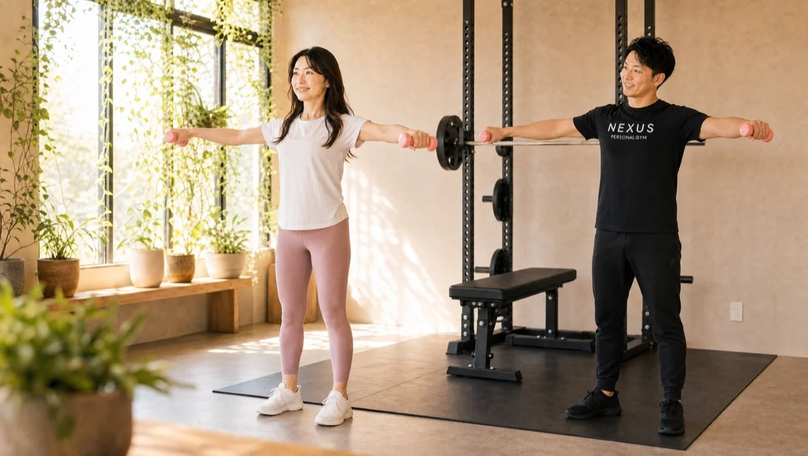
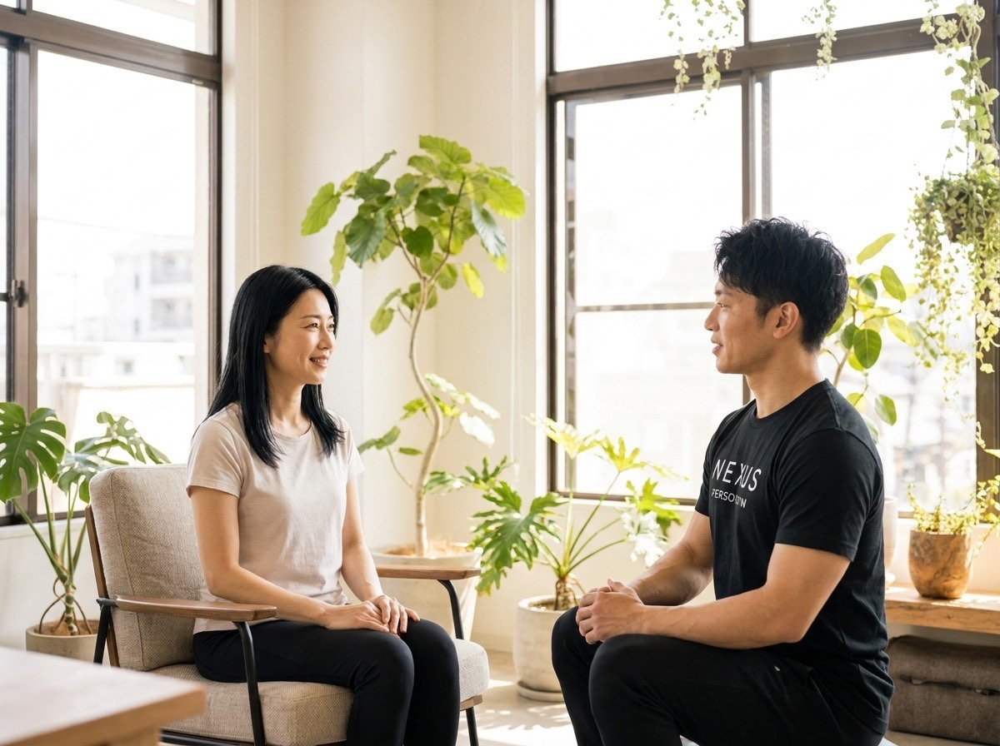
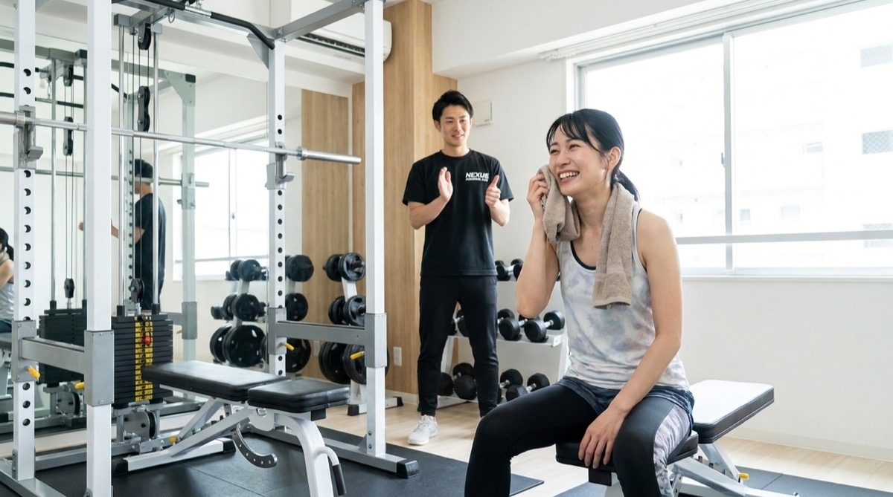

NEXUS Personal Gym ／ 福岡県福岡市中央区
NEXUSパーソナルジム 天神南店｜天神で働くあなた仕様に組める、完全個室ジム
福岡市中央区渡辺通、地下鉄七隈線の天神南駅や西鉄天神大牟田線の西鉄福岡（天神）駅・薬院駅からすぐにある完全個室パーソナルジムです。Google口コミは★4.8（93件・2026年7月時点）。天神南店の一番の強みは、「自分仕様に組める」プランの柔軟さ。30分・60分・90分×月2〜12回を自由に組み合わせられるので、時間管理が難しい不規則なお仕事の方でも、その時期の忙しさに合わせて無理なく続けられます。体調が優れない日はストレッチ中心に組み替え、コンディションが良い日は脚が震えるまでしっかり追い込む——押し付けではなく、今日のあなたに合わせて内容を調整します。予約・変更はLINEで完結、6時間前まで無料キャンセルだから、急な残業やシフト変更にも対応。会員の約85%が女性で、完全個室のマンツーマンだから人目を気にせず集中できます。ウェア・タオル・プロテインまで無料で手ぶらOK、毎日8:00〜23:00。式準備で予定が読めない時期にも効く、結婚式前のブライダルボディメイクにも対応しています。
- ブライダル対応
- 完全個室
- Google口コミ★4.8
- 天神南駅すぐ
- 柔軟プラン
- 6時間前キャンセルOK
- 手ぶらOK
この店舗の特徴
NEXUS天神南店は、福岡市中央区渡辺通にある完全個室パーソナルジム。地下鉄七隈線の天神南駅、西鉄福岡（天神）駅・薬院駅からすぐという、天神で働く方に便利な立地です。この店舗が選ばれる理由は、「自分仕様に組める」プランとスケジュールの柔軟さ。30分・60分・90分×月2〜12回を自由に組み合わせられるので、繁忙期は回数を抑え、余裕のある時期はしっかり通う、といった調整が思いのままです。だからこそ、時間管理が難しい不規則なお仕事の方でも続けられます。同じ福岡市中央区の平尾店が、落ち着いた環境で「きれいに痩せる」美容軸のボディメイクを得意とするのに対し、天神南店は「忙しく働く社会人が、自分のペースで組める」柔軟さが持ち味。目的や生活スタイルに合わせて選べます。体調が優れない日はストレッチ中心に、やれる日は追い込む——今日のコンディションに合わせた指導で、Google口コミ★4.8（93件）の評価をいただいています。天神で働くあなたの生活に、無理なく組み込めるパーソナルジムです。
30分・60分・90分×月2〜12回。組み合わせは自由

パーソナルジムが続かない一番の理由は、「決まった曜日・時間に、決まった回数」通えないこと。仕事が不規則な社会人にとって、これは大きなハードルです。天神南店は、30分・60分・90分×月2〜12回を自由に組み合わせられる柔軟なプラン設計。「今月は繁忙期だから月2回、来月は落ち着くから月8回」というように、その時期の忙しさに合わせて無理なく組めます。実際に、「料金プランが多様でスケジュール調整がしやすい。時間管理が難しい仕事でも続けられる」「多くのジムを試した末に、ここが一番自分に合った」という声をいただいています。予約・変更はLINEで完結し、6時間前まで無料でキャンセル・変更が可能。急な残業やシフト変更にも慌てずに対応できます。「通えなかった罪悪感」で足が遠のくのではなく、「今の自分に合わせて組み直せる」から続く。それが、天神で働くあなたに天神南店が選ばれる理由です。
体調が優れない日は、ストレッチの日に

忙しく働いていると、睡眠不足や疲れで「今日は体が重い」という日が必ずあります。そんな日に無理な追い込みを強いられると、ジムそのものが苦痛になってしまいます。天神南店では、決まったメニューを押し付けるのではなく、その日のコンディションに合わせて内容を組み替えます。「体調がすぐれない日はストレッチ中心に組み替えてくれる。無理なく、でもやれる日はしっかり追い込める」——これは実際にいただいた会員さまの声です。疲れている日は、ストレッチや軽い有酸素で体をほぐし、血流を促してコンディションを整える。それも立派なトレーニングの一部です。完全個室のマンツーマンだからこそ、その日の様子を見ながら柔軟に対応できます。「行かなきゃ」ではなく「行けば整う」。だから、忙しい社会人でも通うことが負担になりません。今日の体調に合わせて、けれど着実に前へ進む。それが、続けられるトレーニングの形です。
脚が震えるまで、やれる日はやる

体調に合わせて組み替えると言っても、決して「甘い」トレーニングではありません。コンディションが整った日は、脚が震えるまでしっかり追い込みます。「自己流では変わらなかったが、フォームと食事を見てもらい、体重・体脂肪率・見た目まで変わった」——結果を出している会員さまは、やれる日にきちんと負荷をかけています。大切なのは、追い込む日と整える日のメリハリ。毎回全力では体が壊れ、毎回軽めでは変わりません。天神南店では、その日のコンディションを見極めて、追い込むべき日には正しいフォームで限界まで。完全個室のマンツーマンだから、フォームが崩れた瞬間も見逃さず、安全に追い込めます。そして、やり切った後の「脚が震えるほど頑張れた」という達成感は、次のトレーニングへのモチベーションになります。無理なく、でも本気で。この両立が、忙しい社会人でも確かな結果につながる理由です。
渡辺通・天神南駅すぐ。仕事帰りの動線に
天神南店は、地下鉄七隈線の天神南駅からすぐの、福岡市中央区渡辺通にあります。天神南駅に加え、西鉄天神大牟田線の西鉄福岡（天神）駅・薬院駅からも歩けるので、天神で働く方が仕事帰りの動線でそのまま立ち寄れる立地です。渡辺通は天神の中心部に近く、それでいてオフィスや商業施設が集まるエリア。「わざわざジムのために遠回りする」のではなく、通勤・退勤の途中に組み込めるから、忙しい社会人でも続けられます。ウェア・水・タオル・プロテインまですべて無料なので、仕事帰りに手ぶらでふらっと。完全個室なので、着替えや身支度も人目を気にせず済ませられます。NEXUSは同じ福岡市中央区に、この天神南店（渡辺通）と平尾店（平尾）の2店舗があります。落ち着いた環境でじっくり美容軸に取り組むなら平尾店、忙しい時期を柔軟なプランで乗り切るなら天神南店、と使い分けることもでき、会員の方は両店舗をご利用いただけます。まずは無料体験で、天神南店の通いやすさを確かめてみてください。
福岡のもう一軒｜平尾店を見るPrice料金プラン
30分・60分・90分×月2〜12回を組み合わせて、自分仕様に設計できます（上記は代表的なプラン例）。入会金は通常55,000円、無料体験当日入会で15,000円（税込）に割引。AI食事指導は月額3,000円（税込）。ウェア・プロテイン込みで、この価格。全店舗共通の料金です。
Bridal Body-make結婚式まで、最高の自分をつくる天神南店のブライダルボディメイク
天神南店では、挙式日から逆算した結婚式前のボディメイクに力を入れています。ドレスで視線が集まる背中・二の腕・デコルテ・ウエストを、完全個室のマンツーマンで整えます。会員の約85%が女性。体に不必要に触れないノータッチ指導を基本にしているので、はじめての方も安心してトレーニングに集中できます。準備で予定が読めない時期でも、柔軟なプランで無理なく——挙式に向かう物語に、天神南店が伴走します。


「ドレスの試着で二の腕が気になった」「背中の開いたデザインを、体型を理由に諦めたくない」——挙式という動かせない期日があるからこそ、ボディメイクは最後までやり切れます。天神南店では、まず挙式日とドレスのデザインをうかがい、挙式日から逆算した90日プラン・60日プランで「いつまでに、どの部位を、どこまで」を最初に設計します。残された日数が少なくても、部位を絞って集中的に取り組めば体のラインは十分に変えられます。極端な食事制限で当日フラフラ……ということがないよう、その日のコンディションから逆算する無理のない指導で、式当日にピークを合わせます。目標が数字ではなく“当日の自分の姿”だからこそ、「このデザインで大丈夫かな」から「このドレスを選んでよかった」へと、モチベーションが途切れません。
天神・薬院エリアで挙式を予定されている方に。式場やドレスショップの打ち合わせが集まる街だから、その足で通えます。そして、式準備で予定が読めない時期こそ、月2回から組めるプランと6時間前キャンセルが効きます。「今週は打ち合わせで通えないけれど、来週はしっかり」——そんな柔軟な通い方ができるのが天神南店の強みです。福岡の2店舗は役割が分かれていて、じっくり美容軸なら平尾店、忙しい準備期間の柔軟さなら天神南店。目的とその時期の生活に合わせて選んでください。
挙式90日前に入会しました。式場やドレスショップの打ち合わせが立て込む時期でしたが、月4回を基本に、忙しい週は振り替えながら通えたのが助かりました。背中の開いたドレスに合わせて二の腕と背中を中心にプランを組んでもらい、試着のたびにサイズダウンを実感。当日は最高のコンディションでバージンロードを歩けて、式後もそのまま通っています。
上記はサービス内容をわかりやすく伝えるためのモデルケース（イメージ）であり、特定のお客様の口コミではありません。
そして、挙式はゴールではなく新しい生活のスタートでもあります。せっかく作り上げた身体を、そのまま新生活の習慣に。天神南店は毎日8:00〜23:00営業・30分・60分・90分×月2〜12回の柔軟なプランから続けられるので、挙式後の体型維持から、産後のボディメイクまで、人生の節目に長く伴走します。全国約70店舗のネットワークがあるため、引っ越しや里帰りの際も最寄り店舗へ。「一生に一度」のために始めた習慣が、その後の人生を支える土台になります。
挙式日からの逆算タイムライン｜ブライダル専用ページを見るReviewsお客様の声
NEXUS天神南店はGoogle口コミ★4.8・93件（2026年7月時点）。多様なプランと柔軟なスケジュール調整で、天神で働く忙しい社会人に支持されています。体調に合わせて組み替えられる指導と、やれる日はしっかり追い込むメリハリが、続けやすさと結果の両立につながっています。
料金プランが多様で、スケジュール調整がしやすいのが本当に助かります。これまで多くのジムを試してきましたが、仕事の都合に合わせて組めるここが、一番自分に合っていると感じました。
体調がすぐれない日は、ストレッチ中心に組み替えてくれます。無理なく、でもやれる日はしっかり追い込めるので、忙しくても通い続けられています。押し付けがましくないのが良いです。
自己流ではまったく変わりませんでしたが、フォームと食事を見てもらったことで、体重・体脂肪率、そして見た目まで変わりました。正しくやることの大切さを実感しています。
アクセス
- 店舗名
- NEXUSパーソナルジム 天神南店
- 住所
- 〒810-0004
福岡県福岡市中央区渡辺通5-24-37 天神JOEビル503 - 最寄り駅
- 地下鉄七隈線 天神南駅／西鉄天神大牟田線 西鉄福岡（天神）駅・薬院駅
- 営業時間
- 毎日 8:00〜23:00
- 電話番号
- 050-1790-8487
天神南店のよくある質問
Q天神・渡辺通エリアに完全個室のパーソナルジムはありますか？+
Q仕事が不規則でも通えますか？+
Q平尾店との違いは何ですか？+
Q結婚式の準備で忙しいのですが、キャンセルはいつまで可能ですか？+
Q結婚式まで2ヶ月しかなくても間に合いますか？+
Q挙式後や産後も通い続けられますか？+
よくある質問（全店共通）
料金・制度などNEXUS全店に共通するご質問です。さらに詳しくは110問のFAQをご覧ください。
Q料金はいくらですか？+
Q手ぶらで通えますか？+
Qキャンセルはいつまでできますか？+
Q食事指導はありますか？+
Qトレーナーはどんな人ですか？+
Q女性会員は多いですか？+
Q体験の流れは？+
NEXUSパーソナルジムの特徴・料金をもっと見る